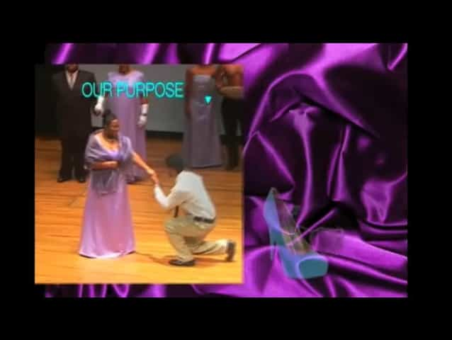

Emmanuel is a pompous git who enjoys the company of girly mistresses, spirited men, endless buffets and luxurious clothes. He can be found on Twitter at @Goldsteineum.


Kickstarter is a website where entrepreneurs show off a prototype of something they want to build and sell to the public. Instead of seeking a large amount of funding upfront, they use sales revenue from pre-orders that Kickstarter users place to get a production run started. Once a project passes a specified funding threshold, the project goes into production. For example, one might showcase a pair of premium jeans to be sold for $100, but the project will only happen if it garners more than $100,000 in funding, or 1,000 pairs of jeans. It has been used to great effect, for instance, to fund independent films – 10% of films at Sundance are Kickstarter-funded, according to the company’s 2012 annual report.
Of course, even the best of technologies cannot escape exploitation at the hands of the wicked. The Soviet Union had Sputnik, and well, the fat acceptance crowd now has Kickstarter. Some have objected to the word ‘fat,’ as harsh; in its stead, the term Women Hailing the Acceptance of Large Entities (WHALEs) has been gaining currency.
While WHALEs have had some visibility on places like Tumblr and Reddit, their presence in the world of mainstream magazines has been rather, er, thin. This venture sought to reverse that. Thankfully it never came to fruition. My sources report that the photo above is actually a brain teaser – the goal is to figure out how she has soaked herself in sweat by merely holding two pound dumbbells. Note the WHALE’s aggressive show of soggy cleavage, to remind the viewer that appearances to the contrary, she is a woman. The venture offered t-shirts to those who volunteered funds, but curiously, the smallest size available was XXL (aka 1X) – somehow there is no room for non-morbidly obese backers in this movement.
Money Raised: $788
Progress towards goal: 7%
The goal of this project was to raise money to get the creations of a clothing designer into a plus size fashion show in New York City. Above all, I have to recommend their promotional video to the bodybuilders out there on the ‘cutting’ phase of their diet, for its welcome ability to suppress appetite. The video features these women dancing, and I am told it was filmed on March 11, 2011 – a curious coincidence. My sources further report that a certain master chef named Nigel was on the scene to sate them after their arduous filming.
Money Raised: $2,117
Progress towards goal: 26%

Pageant of Queens claims its aim is to create a TV fashion show to build the self-esteem of women whose self-image and knee joints are in tatters, thanks to their copious size. But in their promotional video, the last few frames make their intent clear. Like the great Martin Luther King Jr., the WHALEs too have a fantastic dream – that every Big Beautiful woman will have at least one young, handsome buck groveling for her company, and preferably multiple. (Note how the frame above reads “OUR PURPOSE” in great big capital letters, followed by an arrow pointing to a man kneeling before her.) This dream may seem fanciful to many contemporary ears, as did those of MLK in his time. With God’s blessing, however, they will not experience the success that Dr. King’s ideas have.
Money Raised: $0
Progress towards goal: 0%
Here we have a promotion for a new fashion line. These women are so fat curvy that even the favorite tensed-muscle ‘arms akimbo’ pose favored by attention whores everywhere cannot obscure the brobdingnagian deposits of adipose tissue dwelling on their limbs. Wait, I meant to say, ladies – you’re beautiful. Again, a similar trope crops up: the only men that belong in the presence of these women are young, lean and handsome.
Money Raised: $100
Progress towards goal: 5%
Here’s the palate cleanser. Honestly, this one is just spiteful. The proprietor claims she wants to expand her offerings to include clothing for fat-sized women, and then puts up a promotional video consisting of cute slim babes frolicking in bikinis at the beach. Trying to curry the attention of WHALEs by shoving skinny girls in their face is like trying to get a feminist following by attempting to murder your girlfriend. Oh wait. That might actually work.
Money Raised: $331
Progress towards goal: 33%
Alright screw it, the photo from exhibit 2 is meme-worthy. Try your hand at writing a funny caption:

Don’t Miss: How Black America Has Predicted Our Future